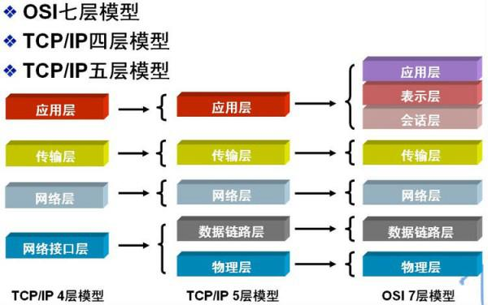

OSI七层协议和TCPIP四层协议
OSI七层协议

物理层
在OSI参考模型中，物理层(Physical Layer)是参考模型的最低层。物理层的作用是实现相邻计算机节点之间比特流的透明传送，尽可能屏蔽掉具体传输介质和物理设备的差异。“透明传送比特流”表示经实际电路传送后的比特流没有发生变化，对传送的比特流来说，这个电路好像是看不见的
数据链路层
数据链路层(Data Link Layer)是OSI模型的第二层，负责建立和管理节点间的链路。该层的主要功能是:通过各种控制协议，将有差错的物理信道变为无差错的、能可靠传输数据帧的数据链路。在计算机网络中由于各种干扰的存在，物理链路是不可靠的。因此，这一层的主要功能是在物理层提供的比特流的基础上，通过差错控制、流量控制方法，使有差错的物理线路变为无差错的数据链路，即提供可靠的通过物理介质传输数据的方法。数据链路层的具体工作是接收来自物理层的位流形式的数据，并封装成帧，传送到上一层；同样，也将来自上层的数据帧，拆装为位流形式的数据转发到物理层；并且，还负责处理接收端发回的确认帧的信息，以便提供可靠的数据传输。
网络层
网络层(Network Layer)是OSI模型的第三层，它是OSI参考模型中最复杂的一层。它在下两层的基础上向资源子网提供服务。其主要任务是:通过路由选择算法，为报文或分组通过通信子网选择最适当的路径。具体地说，数据链路层的数据在这一层被转换为数据包，然后通过路径选择、分段组合、顺 序、进/出路由等控制，将信息从一个网络设备传送到另一个网络设备。一般地，数据链路层是解决同一网络内节点之间的通信，而网络层主要解决不同子网间的通信。例如在广域网之间通信时，必然会遇到路由(即两节点间可能有多条路径)选择问题。
传输层
传输层(Transport Layer)是OSI模型的第4层。因此该层是通信子网和资源子网的接口和桥梁，起到承上启下的作用。该层的主要任务是:向用户提供可靠的端到端的差错和流量控制，保证报文的正确传输。传输层的作用是向高层屏蔽下层数据通信的细节，即向用户透明地传送报文。该层常见的协议:TCP/IP中的TCP协议和UDP协议。传输层提供会话层和网络层之间的传输服务，这种服务从会话层获得数据，并在必要时，对数据进行分割。然后，传输层将数据传递到网络层，并确保数据能正确无误地传送到网络层。因此，传输层负责提供两节点之间数据的可靠传送，当两节点的联系确定之后，传输层则负责监督工作。综上，传输层的主要功能如下:监控服务质量。
会话层
会话层(Session Layer)是OSI模型的第5层，是用户应用程序和网络之间的接口，主要任务是:向两个实体的表示层提供建立和使用连接的方法。将不同实体之间的表示层 的连接称为会话。因此会话层的任务就是组织和协调两个会话进程之间的通信，并对数据交换进行管理。 用户可以按照半双工、单工和全双工的方式建立会话。当建立会话时，用户必须提供他们想要连接的远程地址。而这些地址与MAC(介质访问控制子层)地址或网络层的逻辑地址不同，它们是为用户专门设计的，更便于用户记忆。
表示层
表示层(Presentation Layer)是OSI模型的第六层，它对来自应用层的命令和数据进行解释，对各种语法赋予相应的含义，并按照一定的格式传送给会话层。其主要功能是“处理用户信息的表示问题，如编码、数据格式转换和加密解密”等。
应用层
应用层(Application Layer)是OSI参考模型的最高层，它是计算机用户，以及各种应用程序和网络之间的接口，其功能是直接向用户提供服务，完成用户希望在网络上完成的各种工作。它在其他6层工作的基础上，负责完成网络中应用程序与网络操作系统之间的联系，建立与结束使用者之间的联系，并完成网络用户提出的各种网络服务及 应用所需的监督、管理和服务等各种协议。此外，该层还负责协调各个应用程序间的工作。
七层结构记忆方法:应、表、会、传、网、数、物
OSI参考模型中的数据传输过程
在OSI参考模型中，当一台主机需要传送用户的数据(DATA)时，经历的过程如下:
- (DATA)数据首先通过应用层的接口进入应用层。在应用层，用户数据被加上应用层的报头(Application Header，AH)，形成应用层协议数据单元(Protocol Data Unit，PDU)，然后被递交到下一层-表示层。
- 表示层并不”关心”上层-应用层的数据格式而是把整个应用层递交的数据包看成是一个整体进行封装，即加上表示层的报头(Presentation Header，PH)。然后，递交到下层-会话层。
- 同样，会话层、传输层、网络层、数据链路层也都要分别给上层递交下来的数据加上自己的报头。它们是:会话层报头(Session Header，SH)、 传输层报头(Transport Header，TH)、 网络层报头(Network Header，NH)、 数据链路层报头(Data link Header，DH)。 其中，数据链路层还要给网络层递交的数据加上数据链路层报尾(Data link Termination，DT)形成最终的一帧数据。
- 当一帧数据通过物理层传送到目标主机的物理层时，该主机的物理层把它递交到上层-数据链路层。数据链路层负责去掉数据帧的帧头部DH和尾部DT(同时还进行数据校验)。如果数据没有出错，则递交到上层-网络层。
- 同样，目标主机的网络层、传输层、会话层、表示层、应用层也要做与物理层类似的去掉各个报头的工作。最终得到原始数据，并递交到目标主机的具体应用程序中。
OSI七层协议和TCP/IP四层协议对应关系

协议族
应用层
DHCP · DNS · FTP · Gopher ·GTP · HTTP · IMAP4 · IRC · NNTP · NTP · POP3 · RPC · RTCP · RTP ·RTSP · SIP · SMTP ·SNMP · SSH · SDP · SOAP .STUN. SSDP · TELNET · XMPP
表示层
HTTP/HTML · FTP · Telnet · ASN.1(具有表示层功能)
会话层
ADSP ·ASP ·H.245·ISO-SP ·iSNS ·NetBIOS ·PAP ·RPC·
RTCP ·SMPP ·SCP ·SSH ·ZIP ·SDP(具有会话层功能)
传输层
TCP · UDP · TLS · DCCP · SCTP ·RSVP · PPTP
网络层
IP (IPv4 · IPv6) · ICMP · ICMPv6 · IGMP ·IS-IS · IPsec · BGP · RIP · OSPF ·ARP · RARP
数据链路层
Wi-Fi(IEEE 802.11) · WiMAX(IEEE 802.16) ·ATM · DTM · 令牌环 · 以太网路 ·
FDDI · 帧中继 · GPRS · EVDO · HSPA · HDLC · PPP · L2TP · ISDN ·STP
物理层
以太网路卡 · 调制解调器 · 电力线通信(PLC) · SONET/SDH(光同步数字传输网) ·
G.709(光传输网络) · 光导纤维 · 同轴电缆 · 双绞线
OSI七层协议和TCP/IP四层协议的协议族图示
TCP/IP协议族图示
TCP/IP参考模型中的数据传输过程
从上往下，每经过一层，协议就会在数据包包头上面做点手脚，加点东西，传送到接收端，再层层解套出来，如下示意图:
设备所在层
- 物理层:网卡，网线，集线器，中继器，调制解调器
- 数据链路层:网桥，交换机
- 网络层:路由器
- 网关工作在第四层传输层及其以上
设备相关知识
交换机的工作原理
交换机拥有一条很高带宽的内部总线和内部交换矩阵。交换机的所有的端口都挂接在这条总线上，控制电路收到数据包以后，处理端口会查找内存中的地址对照表以确定目的MAC(网卡的硬件地址)的NIC(网卡)挂接在哪个端口上，通过内部交换矩阵迅速将数据包传送到目的端口，目的MAC若不存在则广播到所有的端口，接收端口回应后交换机会“学习”新的地址，并把它添加入内部MAC地址表中。 使用交换机也可以把网络“分段”，通过对照MAC地址表，交换机只允许必要的网络流量通过交换机。通过交换机的过滤和转发，可以有效的隔离广播风暴，减少误包和错包的出现，避免共享冲突。 交换机在同一时刻可进行多个端口对之间的数据传输。每一端口都可视为独立的网段，连接在其上的网络设备独自享有全部的带宽，无须同其他设备竞争使用。当节点A向节点D发送数据时，节点B可同时向节点C发送数据，而且这两个传输都享有网络的全部带宽，都有着自己的虚拟连接。总之，交换机是一种基于MAC地址识别，能完成封装转发数据包功能的网络设备。交换机可以”学习”MAC地址，并把其存放在内部地址表中，通过在数据帧的始发者和目标接收者之间建立临时的交换路径，使数据帧直接由源地址到达目的地址。
集线器
集线器的英文称为“Hub”。集线器的主要功能是对接收到的信号进行再生整形放大，以扩大网络的传输距离，同时把所有节点集中在以它为中心的节点上。它 工作于OSI(开放系统互联参考模型)参考模型第一层，即“物理层”。集线器与网卡、网线等传输介质一样，属于局域网中的基础设备，采用 CSMA/CD(即带冲突检测的载波监听多路访问技术)介质访问控制机制。集线器每个接口简单的收发比特，收到1就转发1，收到0就转发0，不进行碰撞检 测。集线器属于纯硬件网络底层设备，基本上不具有类似于交换机的”智能记忆”能力和”学习”能力。它也不具备交换机所具有的MAC地址表，所以它发送数据 时都是没有针对性的，而是采用广播方式发送。也就是说当它要向某节点发送数据时，不是直接把数据发送到目的节点，而是把数据包发送到与集线器相连的所有节 点。HUB是一个多端口的转发器，当以HUB为中心设备时，网络中某条线路产生了故障，并不影响其它线路的工作。所以HUB在局域网中得到了广泛的应用。 大多数的时候它用在星型与树型网络拓扑结构中。
集线器的交换机的区别
首先说HUB,也就是集线器。它的作用可以简单的理解为将一些机器连接起来组成一个局域网。而交换机(又名交换式集线器)作用与集线器大体相同。但是两者在性能上有区别:集线器采用的式共享带宽的工作方式，而交换机是独享带宽。这样在机器很多或数据量很大时，两者将会有比较明显的。
- 工作位置不同。集线器工作在物理层，而交换机工作在数据链路层。
- 工作方式不同。集线器是一种广播方式，当集线器的某个端口工作时其他端口都能收听到信息。交换机工作时端口互不影响。
- 带宽不同。集线器是所有端口共享一条带宽，在同一时刻只能有两个端口传输数据；而交换机每个端口独占一条带宽。
- 性能不同。交换机以MAC地址进行寻址，有一定额外的寻址开销；集线器以广播方式传输数据，流量小时性能下降不明显，适用于共享总线的局域网。
路由器与交换机的区别:
总的来说，路由器与交换机的主要区别体现在以下几个方面:
- 工作层次不同。最初的的交换机是工作在数据链路层，而路由器一开始就设计工作在网络层。由于交换机工作在数据链路层，所以它的工作原理比较简单，而路由器工作在网络层，可以得到更多的协议信息，路由器可以做出更加智能的转发决策。
- 数据转发所依据的对象不同。交换机是利用物理地址或者说MAC地址来确定转发数据的目的地址。而路由器则是利用IP地址来确定数据转发的地址。IP地址是在软件中实现的，描述的是设备所在的网络。MAC地址通常是硬件自带的，由网卡生产商来分配的，而且已经固化到了网卡中去，一般来说是不可更改的。而IP地址则通常由网络管理员或系统自动分配。
- 传统的交换机只能分割冲突域，不能分割广播域；而路由器可以分割广播域。由交换机连接的网段仍属于同一个广播域，广播数据包会在交换机连接的所有网段上传播，在某些情况下会导致通信拥挤和安全漏洞。连接到路由器上的网段会被分配成不同的广播域，广播数据不会穿过路由器。虽然第三层以上交换机具有VLAN功能，也可以分割广播域，但是各子广播域之间是不能通信交流的，它们之间的交流仍然需要路由器。
- 交换机负责同一个网段的通信，而路由器负责不同网段的通信。路由器提供了防火墙的服务。路由器仅仅转发特定地址的数据包，不传送不支持路由协议的数据包传送和未知目标网络数据包的传送，从而可以防止广播风暴。
路由表
路由表是指路由器或者其他互联网网络设备上存储的一张路由信息表，该表中存有到达特定网络终端的路径，在某些情况下，还有一些与这些路径相关的度量。路由器的主要工作就是为经过路由器的每个数据包寻找一条最佳的传输路径，并将该数据有效地传送到目的站点。由此可见，选择最佳路径的策略即路由算法是路由器的关键所在。为了完成这项工作，在路由器中保存着各种传输路径的相关数据——路由表(Routing Table)，供路由选择时使用，表中包含的信息决定了数据转发的策略。路由表可以是由系统管理员固定设置好的，也可以由系统动态修改，可以由路由器自动调整，也可以由主机控制。
- 静态路由表:由系统管理员事先设置好固定的路由表称之为静态(static)路由表，一般是在系统安装时就根据网络的配置情况预先设定的，它不会随未来网络结构的改变而改变。
动态路由表:动态(Dynamic)路由表是路由器根据网络系统的运行情况而自动调整的路由表。路由器根据路由选择协议(Routing Protocol)提供的功能，自动学习和记忆网络运行情况，在需要时自动计算数据传输的最佳路径。
路由器通常依靠所建立及维护的路由表来决定如何转发。路由表能力是指路由表内所容纳路由表项数量的极限。路由表中的表项内容包括:destination mask pre costdestination:目的地址，用来标识IP包的目的地址或者目的网络。
- mask:网络掩码，与目的地址一起标识目的主机或者路由器所在的网段的地址。
- pre:标识路由加入IP路由表的优先级。可能到达一个目的地有多条路由，但是优先级的存在让他们先选择优先级高的路由进行利用。
- cost:路由开销，当到达一个目的地的多个路由优先级相同时，路由开销最小的将成为最优路由。
- interface:输出接口，说明IP包将从该路由器哪个接口转发。 nexthop:下一跳IP地址，说明IP包所经过的下一个路由器
ref:
https://www.cnblogs.com/wxgblogs/p/5641643.html
https://blog.csdn.net/buknow/article/details/81148684
https://www.cnblogs.com/dengyungao/p/7541831.html